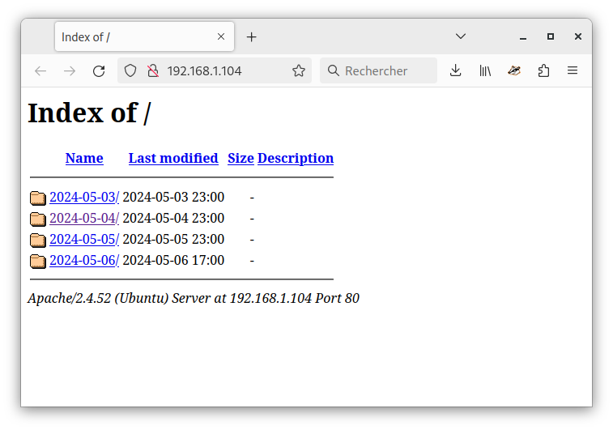

Une fois installée
Après installation, l'ordinateur va redémarrer, puis enregistrer en continu.
Vérifiez que l'enregistrement fonctionne bien
juste après l'installation, mais aussi mensuellement.
Vous pouvez aussi apporter quelques modifications à l'installation.
Accéder aux enregistrements
L'enregistreur écrit dans votre répertoire personnel,
dans un dossier pige.
A l'intérieur il y aura un dossier par jour,
puis un fichier par heure.
Seul le fichier en cours d'écriture est ouvert : vous pouvez faire ce que vous voulez des autres.
Les plus anciens seront effacés automatiquement.

Normalement, la pige partage aussi sur le réseau local
à l'adresse http://pige.local/.
Cette adresse doit aussi fonctionner pour le partage de fichiers (avec Samba).
Sinon vous pouvez aussi utiliser l'adresse IP:
Trouver l'adresse IP de la machine
Si votre pige est reliée à un réseau local (via une box Internet, par exemple)
elle rend accessible les fichiers enregistrés aux autres ordinateurs sur ce réseau.
Vous allez avoir besoin de son adresse IP.
Vous pouvez l'afficher en tapant la commande
ip a show up scope global,
ce sont les 4 chiffres après inet :

Dans les exemples ci-dessous, on utilisera l'adresse 192.168.0.123 :
à vous de remplacer par la votre.
Accès aux fichiers via un navigateur Web
Vous pouvez écouter ou télécharger les fichiers enregistrés avec un navigateur Web,
en vous rendant sur
http://pige.local/
ou à l'adresse de la machine,
par exemple http://192.168.0.123/

Accès aux fichiers via le dossier partagé
Vous pouvez télécharger les fichiers enregistrés via un partage réseau,
en donnant l'adresse de la machine qui pige.
- Sous Linux, entrez
smb://192.168.0.123/pige.
-
Sous Windows, entrez
\\pige\pige
ou \\192.168.0.123\pige.
Choisissez l'accès anonyme.
Cet accès est en lecture seule.
Nous vous recommandons d'attacher ces disques réseau automatiquement,
sur tous les ordinateurs de la radio.
Les fichiers installés
Sur la pige, vous trouverez dans le répertoire personnel quelques fichiers qui
peuvent être intéressants si vous souhaitez la modifier ou en cas de problème.
-
installation.log est une trace de tout ce qui a été affiché pendant l'installation.
Il ne sert qu'en cas de problème : une fois l'installation rodée,
vous pouvez le supprimer.
-
pige.log trace ce qui se passe dans l'enregistreur.
Il sont archivés puis effacés automatiquement,
leur contenu peut servir si la pige ne marche pas bien.
-
nettoyeur_pige.sh est le script qui efface les
enregistrements au-delà d'un certain âge.
Il est exécuté automatiquement chaque jour.
Si vous souhaitez changer la durée de conservation,
c'est là que ça se passe : le nombre de jours est juste après le -mtime.
-
pige.liq est le script
Liquidsoap
qui s'occupe de l'enregistrement,
on en reparle ci-dessous.
Les services systèmes installés par PigeAMA sont définis par des fichiers
placés dans le répertoire utilisateur,
dans ~/.config/systemd/user/.
Envoyer le flux sonore vers icecast
L'enregistrement est réalisé par un script Liquidsoap : le fichier pige.liq.
Vous pouvez l'ouvrir avec un éditeur de texte.
Ce script contient beaucoup de commentaires :
ce sont les lignes qui commencent par un #.
Ces lignes sont ignorées par Liquidsoap et nous permettent d'inclure
des notes, des explications, ou des exemples.
⚠️ Avant toute modification du fichier pige.liq,
faites-en une copie de sauvegarde pour pouvoir revenir à une version fonctionnelle, au cas où.
Vous pouvez aussi utiliser un gestionnaire de versions, comme Git.
Ce script est aussi capable d'envoyer le flux sonore vers un serveur de streaming Icecast.
Il peut à la fois enregistrer des fichiers et envoyer vers Icecast, ou ne faire que l'un des deux,
ou encore envoyer vers plusieurs Icecast avec des format différents.
A la fin du fichier, vous trouverez un bloc qui ajoute une sortie vers Icecast.
Mais ce bloc est caché derrière des #.
Pour activer la sortie Icecast,
retirez-les et remplissez les paramètres correspondant à votre serveur :
point de montage,
addresse, utilisateur, mot de passe.
C'est aussi dans ce script qu'on choisit le format des fichiers, ou du flux Icecast.
Il y a déjà quelques exemples en commentaire.
Pour plus de détails, voyez
la page de documentation Liquidsoap sur les formats.
Après toute modification du fichier pige.liq, vous devez :
-
Vérifier que la modification est correcte en tapant
liquidsoap --check pige.liq -
s'il n'affiche rien, c'est bon !
-
Si la modification est correcte, redémarrez le processus de pige avec la commande
systemctl --user restart pige